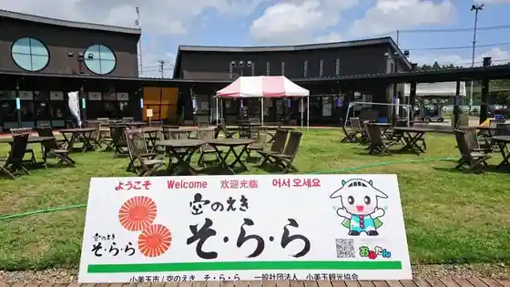
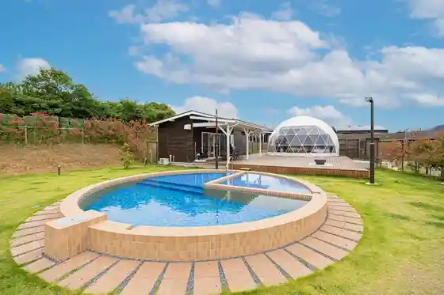
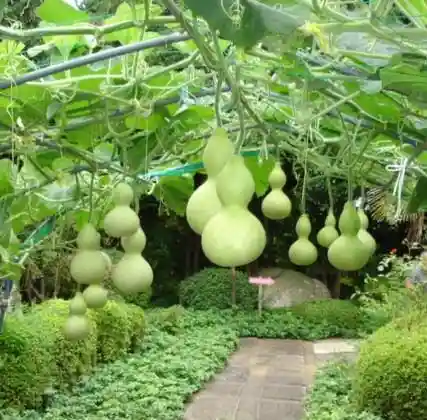

Ibaraki Airport
Omitama, Ibaraki · 0299-37-2800 · Official / source link
Sora no Eki (So Ra Ra)
Omitama, Ibaraki · 0299-56-5677 · Official / source link

Taka no Fuzu Natto Museum
Omitama, Ibaraki · 0120-58-7010 · Official / source link
Grande Private Dog Resort Hitachi Gurande Puraibeto Doggu Resort Hitachi
Omitama, Ibaraki · 050-3104-4434 · Official / source link

Hyotan Art Museum
Omitama, Ibaraki · 0299-48-4088 · Official / source link

Omitama Shiki Bunka Kan Mi no Re
Omitama, Ibaraki · 0299-48-4466 · Official / source link
Kokudo 6 Go Omagari Cherry Blossoms
Omitama, Ibaraki · 0299-48-1111 · Official / source link
Ike Hana Ike
Omitama, Ibaraki · 0299-48-1111 · Official / source link
Yawaragi Farm
Omitama, Ibaraki · 0299-47-0770 · Official / source link
Tonkatsu Misawa
Omitama, Ibaraki · 0299-58-6716 · Official / source link
Enshu Ike
Omitama, Ibaraki · 0299-48-1111 · Official / source link
Chugokuryori Hideka En
Omitama, Ibaraki · 0299-46-2854 · Official / source link
Te Shigoto Sosai
Omitama, Ibaraki · 0299-26-0147 · Official / source link
JA Minori Town JA Mi no Ri Sanchi Chokubai Tokoro
Omitama, Ibaraki · 0299-48-1307 · Official / source link
Oi Ko Kogan Park
Omitama, Ibaraki · Official / source link